Takahashi, Okayama: things to do, food and stays
Takahashi · Okayama
Takahashi
Highlighted on the Okayama map.
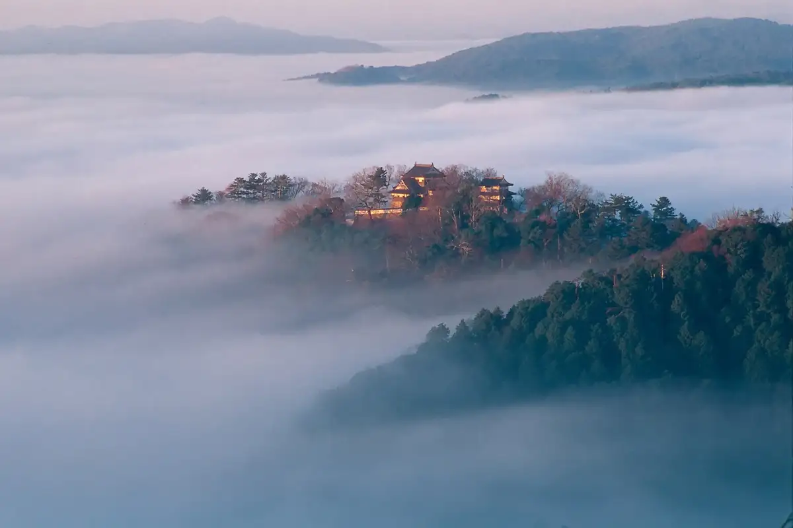
Stay
高梁国際ホテル
Takahashi Kokusai Hotel
Hotel in Masamune, Takahashi with parking; 3-minute walk from Jrbitchutakahashi Station.
高梁ファイブシーズホテル
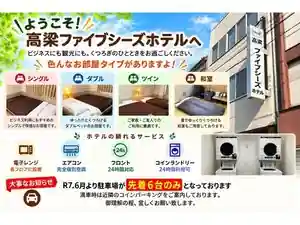
Takahashi Faibushizu Hotel
Hotel in Sakae, Takahashi with business travelers; 2-minute walk from Jrbitchutakahashi Station.
公共の宿 神原荘
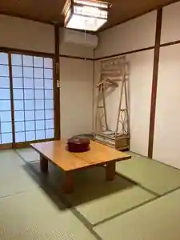
Kokyo No Yado Kamihara So
ゲストハウス ＥＬＥＶＥＮ ＶＩＬＬＡＧＥ 吹屋
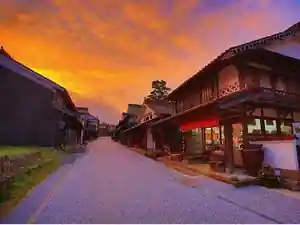
Guesthouse ELEVEN VILLAGE Fukiya
Dining
五万石
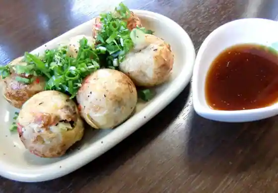
Goman Ishi
手打ちそば 方谷庵
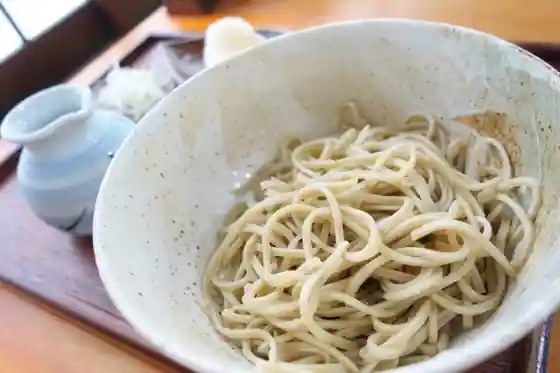
Teuchi Chisoba Hokoku Iori
豆腐料理専門店 恋美豆腐 雲白
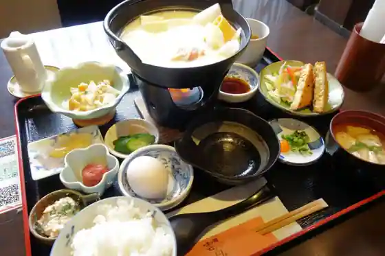
Tofu Ryori Senmon Koi Mizu Fu Kumo Shiro
森田商店
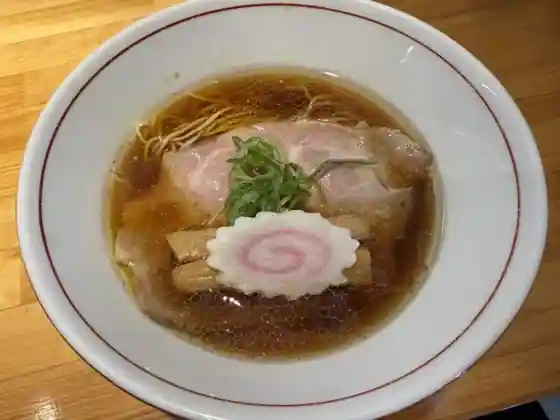
Morita Sho
朝日堂
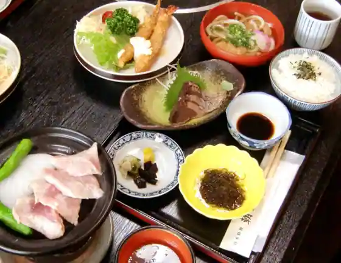
Asahi Do
シャロン
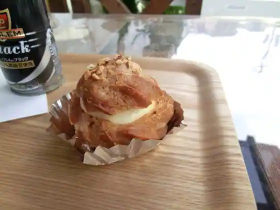
Sharon
カフェ・レスト・シャトー
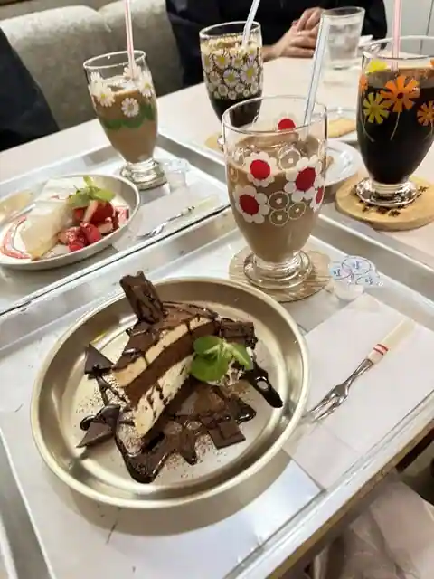
Cafe Resuto Shato
スープカレーの店 つくし
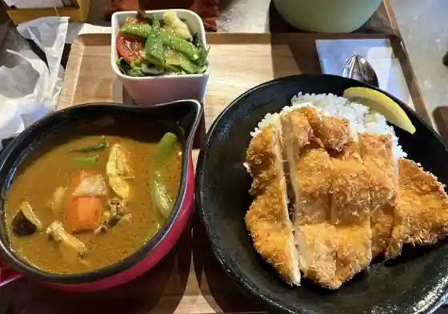
Supukare No Tsukushi
じゅうじゅう亭
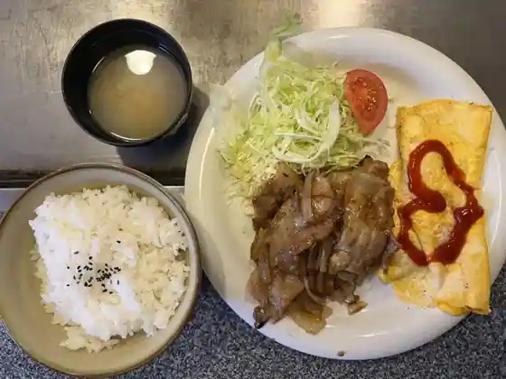
Juju Tei
パンドミ
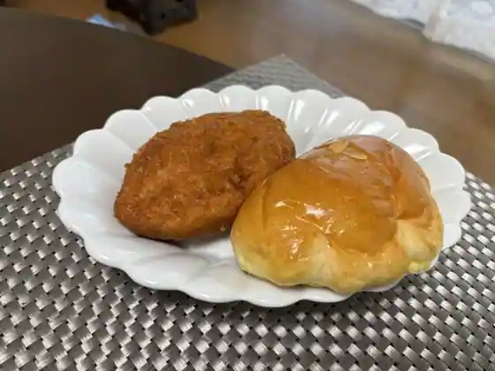
Bakery Domi
天任堂
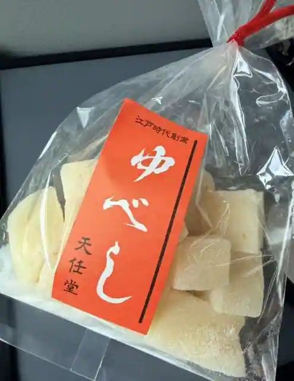
Nin Do
高梁サービスエリア（下り） ショッピングコーナー
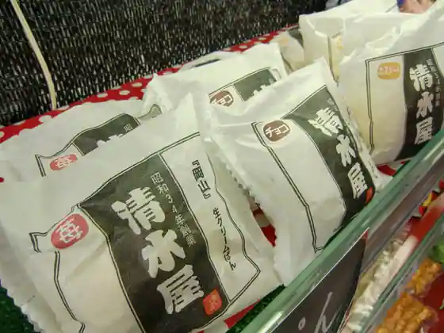
Takahashi Sabisueria (Kudari) Shoppingukona
カレーの吉田屋
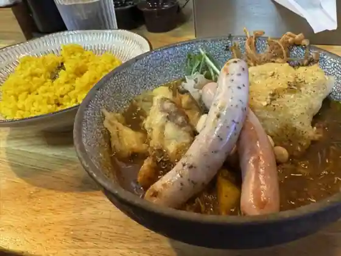
Kare No Yoshidaya
魚富
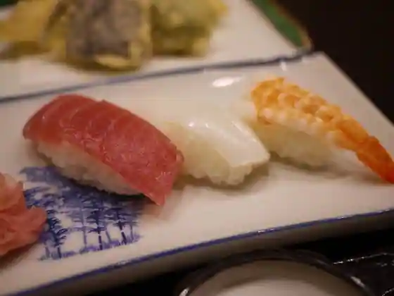
Sakana Tomi
高梁サービスエリア（下り線）スナックコーナー
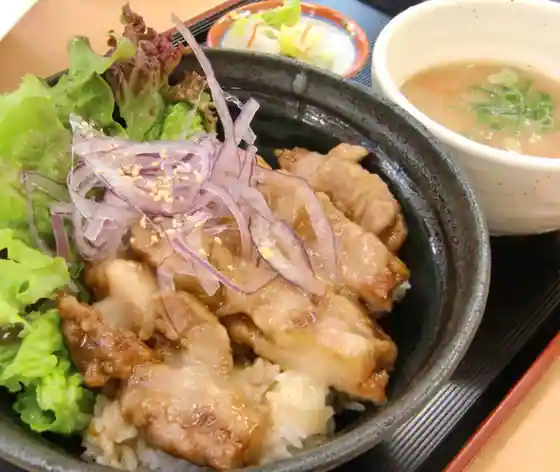
Takahashi Sabisueria (Kudari Sen) Sunakkukona
三宅製菓 本店
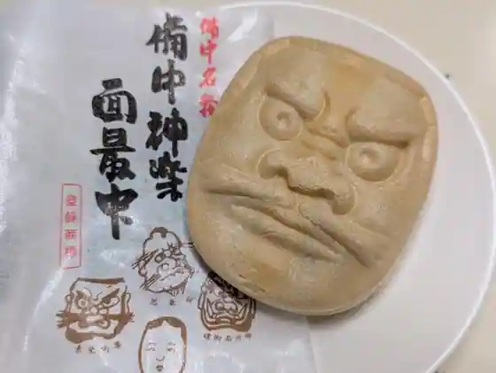
Miyake Seika Hon
どんぶり専門店おぐろ
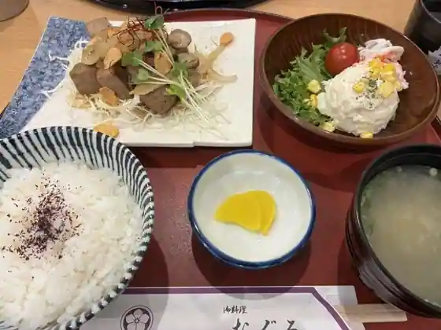
Donburi Senmonten Oguro
すぎ庵
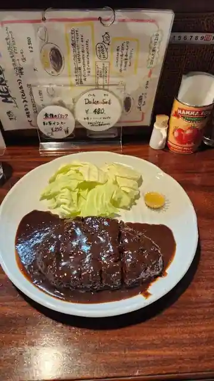
Sugi Iori
そば處 花野
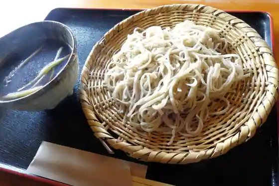
Soba Tokoro Hanano
レタージュ みるく舎
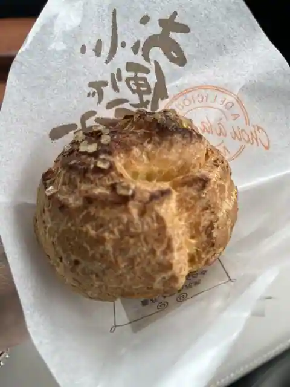
Retaju Miruku Sha
ラ・フォーレ吹屋
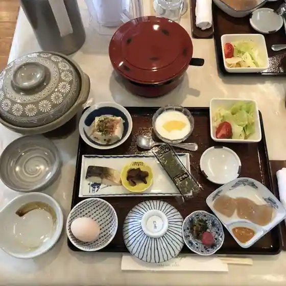
Ra Fore Fukiya
TEXAS
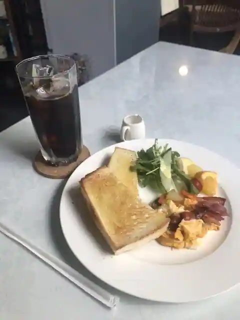
TEXAS
cafe松栄館
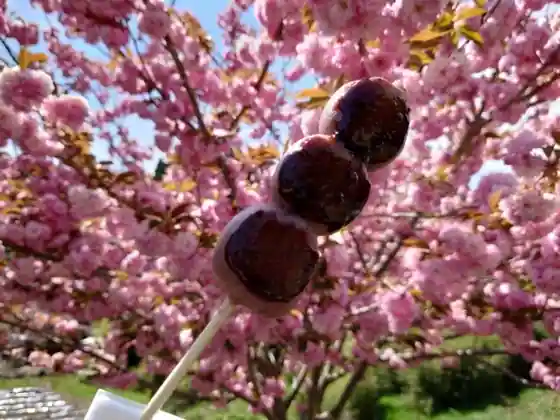
cafe Shoei Kan
天福 高梁店
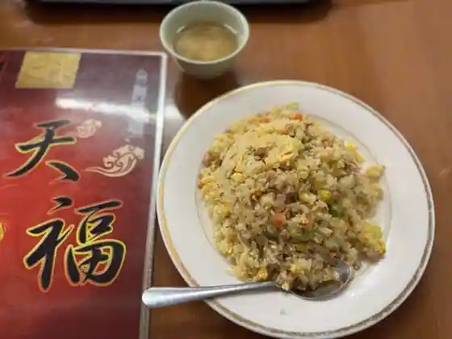
Tenpuku Takahashi
Sights
Fukiya Furusato Mura
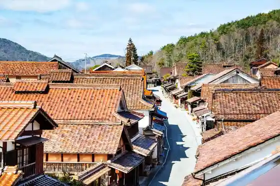
Bitchu Matsuyamajo
Ko Ken Tei
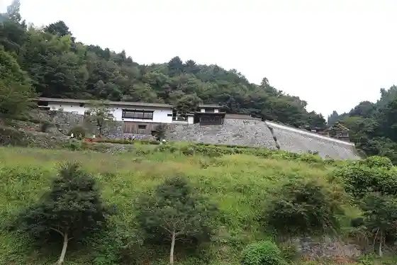
Unkai Ni Uka Bu Bitchu Matsuyamajo Wo Nozomu Lookout (Unkai Lookout)
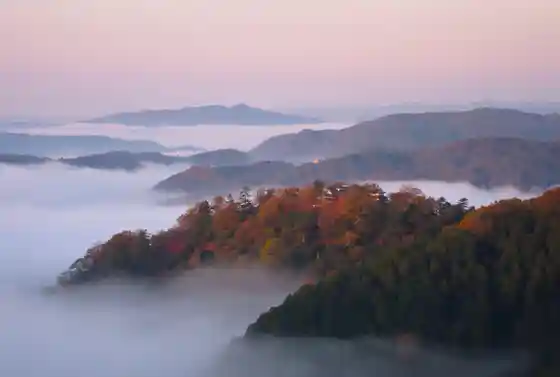
Hayama Kei
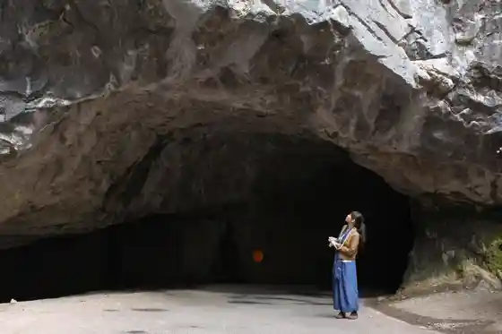
Takahashi Nariwa Art Museum
Kibi Kawakami Fureai Manga Art Museum
Koya Kawa Bikan Chiku
Ukan Jozan Park (Ishi no Kaze Guruma)
Raikyu Tera Garden
Yataka Yama
Kyu Fukiya Shogakko
Fufu Iwa
Kyodo Kan (Fukiya Furusato Mura)
Yataka Yama Park
Fukiya Dozan Sasa Une Kodo
Takahashi Utsukushii Mori Campground
Takahashi Kanko Gaido Kai
Fukiya Kanko Gaido Kai
Takahashi Buke Residence Kyu Orii Ie
Bengara Kan
Takahashi Local History Museum
Takahashi Tourist Information
Shiragiku Shuzo
Takahashi Buke Residence Kyu Hanihara Ie
Sekka Ya Town Furusato Mura
Zenkoku Kawakami Mizu to Midori no Furusato Plaza
Kusurishi In
Nariwa Tourist Information (Taikomaru Plaza)
Kyu Katayama Ie House
Nishie Tei
Yamabiko Market
Rupu Hashi Tembo Tokoro
Takahashi Kirisutokyo Kaido
Takahashi Rekishi Art Museum
Hina Ningyo no Ki Mine (Nippon Boeki Sangyo)
Ho Retsu Shuzo
Bengara Togei Kan
Matsu Ren Tera
Fukuchi Hotaru Village
Takahashi Kanko Bussan Kan Koya Kawa
Anato Yama Shrine
JA Hare no Kunioka Yama Kagura Village
Matsubara Kiri no Umi Viewpoint no Oka
Takahashi Shoka Museum (Ikegami Tei)
Hokoku Hayashi Park
Nara I Dam
Toyotarentariisu Okayama Bitchu Takahashi Ekimae Mise
Hokoku Sono
Nariwa Taiko Maru Park